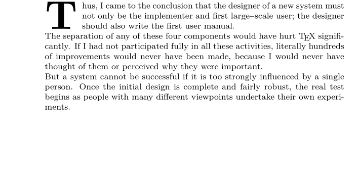
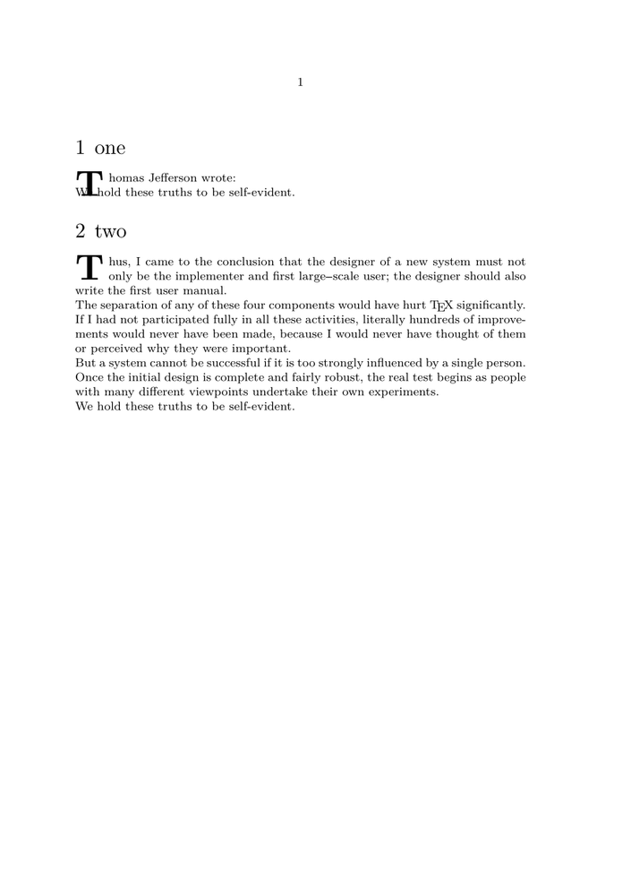

Contents
Summary
Initials (also known as drop caps, dropped caps, or versals) can be made in ConTeXt using the
\placeinitial
command detailed here.
See \setupinitial for customization.
Settings
Description
Examples
basics
-
\definepapersize[sheet][width=120mm,height=60mm] \setuppapersize[sheet] \setuppagenumbering[location=] \setuplayout[width=100mm,backspace=15mm,topspace=0mm,header=0mm,headerdistance=0mm,footer=0mm,footerdistance=0mm] \starttext \placeinitial \input knuth \stoptext
- 
Short Paragraphs
When the first paragraph does not take up the entire height of the drop-cap, there are a few ways to allow the second paragraph to be correctly aligned.
Use the \setupinitial command with the continue option to indicate that the drop-cap (lettrine) is to be protected (i.e., no text may overlap the lettrine):
-
\setupinitial[n=2,continue=yes] \setuphead[chapter][ after={\placeinitial}, page=no, ] \starttext \chapter{one} Thomas Jefferson wrote: We hold these truths to be self-evident. \chapter{two} \input knuth We hold these truths to be self-evident. \stoptext
- 
Another way to indicate the end of the drop-cap is to use the \forgetinitial command, as follows:
-
\enableexperiments[autoforgetinitials] \setupinitial[n=2, style=\tfd, location=text] \setuphead[chapter][after={\placeinitial}] \starttext \chapter Short paragraph \par \forgetinitial \input tufte \stoptext
- internal error: copy error ONSETj/cropped.pdf
Notes
See also
- typo-drp.mkiv
- \definefirstline to apply specific style to the whole first line, or first words
- \starthanging to use an image as a drop cap